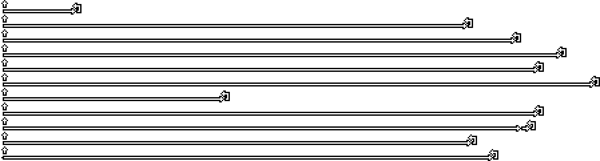
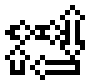

Inspired by a lug talk on esoteric languages I set off to create my own.
Esoteric languages like brainfword are great, but they have one big problem. The code wastes one of its dimensions. For example, consider the Hello World program for it on wikipedia:
++++++++[>++++[>++>+++>+++>+<<<<-]>+>+>->>+[<]<-]>>.>---.+++++++..+++.>>.<-.<.+++.------.--------.>>+.>++.
See? The code is linear and therefore awful. I decided that something had to be done. We need a language that lets you solve problems in two dimensions.
But what would such a language look like? I figured it should be graphical rather than text based. Languages like Piet let you think two dimensionally, but they have too many commands and lose the simplicity of some esoteric languages. Inspired by a song, I decided that everything in my language should be shown as a pixel art arrow, and that I should call my language Arrows.
The language has a single register. Originally, I also had a stack and a RAM with a few different commands, but ultimately replaced the RAM with a second stack. So you can push the one register to either stack, or pop the top of either stack (and subtract the value from the register). There is a “program counter” of sorts that follows the arrows. For every 5 pixels the program counter travels down a straightaway in an arrow, the register is increased by one. This is how constants are encoded within the language.
When an arrow ends, the program counter continues moving in the direction it was going until it either reaches another arrow or it reaches the image boundary. If it reaches an image boundary, the program exits, with the status set to the register value. If it enters another arrow, it will then follow that arrow. An arrow may have an arrow head on both ends. In this case, when the arrow is entered from the side, the program counter will go clockwise if the register value is 0, counter-clockwise otherwise.
Arrows may change directions before ending - in fact, this is how most commands are performed. If an arrow turns left, it pops from the “left” stack and subtracts the popped value from the register. If it turns up, it pushes the register to the left stack. Symmetrically, if an arrow turns right, it pops from the right stack and subtracts the popped value, and if it turns down it pushes to the right stack.
So Arrows really only has 5 commands in a sesnse-  A blown up hello world arrows program.if, goto, increment, pop, and subtract. That is way simpler than
some other languages. It also has an arrow head variation for output and an arrow tail variation for input, so I guess that
makes 7 commands. And it’s super intuitive, just look at this Hello World program!
The long arrows increment the register to the value of the ascii characters HELLO WORLD, and the u-turn arrows push the register
value onto a stack and then pop it off and subtract it from the register value, thus setting the register to 0. Is it clear?
And a simple “echo back what the user wrote until we reach EOF” program is even simpler in Arrows!
 A blown up echo arrows program.
Arrows has a big problem though. With the interpreter I wrote, that Hello World program takes about a second to run. I intend for Arrows to be the next big high performance computing language, and the startup time right now is just unacceptable. I needed a compiler for arrows.
I changed my interpreter to create a control flow graph of each arrows program. To prevent the compiler from looping forever it keeps track of the visited arrows in a python dictionary. Then, to emit the x86 assembly, it iterates over the dictionary of visited arrows and outputs the code for each arrow. To test it, I compiled and ran the Hello World program above, and was met with:
HELLO WORLD
Sweet, it works, and time says it ran in 0.001s, so move over Julia, Arrows is the new HPC language.
I then packaged it up in pip, so you can install Arrows with pip, it is in the package arrows_esolang. The package
adds two executables, arrows, which runs the interpreter, and arrowsc which runs the compiler. To test that it works, I
installed it on my VPS, and compiled and ran the Hello World program above, and was met with:
LLO WORLD
It’s even better than I expected: it optimized itself to use a new shorthand! That’s so dope.
Wait a minute. A professor I know pointed out that LLO WORLD is an anagram of LOL WORLD - Arrows isn’t optimizing itself,
it’s mocking me. That is unacceptable!
After much soul-searching, I remembered that
if you iterate over a python dict, you are not guarenteed to iterate over its elements in the order you inserted them.
I decided to be really lazy - I didn’t even bother switching to an OrderedDict
I simply start the output assembly with JMP .L0 where .L0 is the label of the starting arrow. I figure one extra jump like that
won’t hurt performance much, and the whole thing is a joke anyway, so who cares.